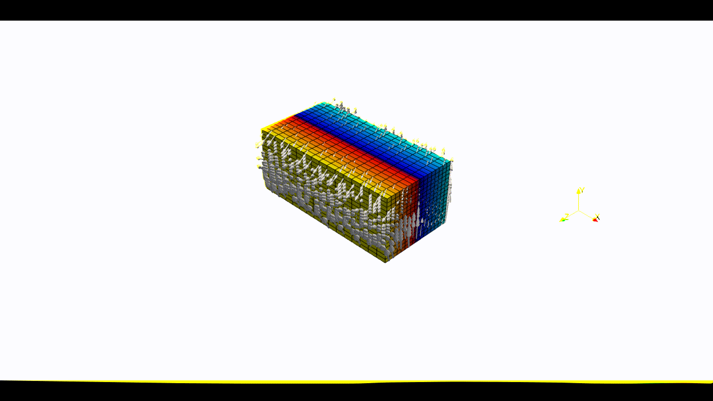

Arbitrary Lagrangian Eulerian (ALE) model
This example shows how to generate the options for an ALE model with pTatin3d, focusing on an oblique extension model with mesh motion along the \(x\) and \(z\) directions. It is called ALE because although the mesh moves with the fluid, its velocity is not exactly the same as the fluid velocity. Rather, the ALE velocity can use arbitrary components of the fluid velocity to move the mesh and ensures, whatever the component selcted, that the domain remains rectangular and that elements are not distorted.
{kind=link}
1. Create a domain
We define a 3D ALE Domain
\(\Omega = [0,600]\times[-250,0]\times[0,300]\) km3
\(\in \mathbb R^3\) discretized by a regular grid of 9x9x9 nodes.
import os
import numpy as np
import genepy as gp
# Domain parameters
dimensions = 3
O = np.array([0,-250e3,0], dtype=np.float64) # Origin
L = np.array([600e3,0,300e3], dtype=np.float64) # Length
n = np.array([9,9,9], dtype=np.int32) # Number of Q1 nodes i.e. elements + 1
# Create DomainALE class instance
Domain = gp.DomainALE(dimensions,O,L,n)
2. Velocity function
We define an oblique extension velocity velocity field
forming an angle of 30 degrees counter-clockwise with respect to the \(z\) axis.
The VelocityLinear class attributes
uis the symbolic velocity functiongrad_uis the symbolic gradient of the velocity functionu_dir_horizontalis the orientation of the horizontal velocity at the boundary
# velocity
cma2ms = 1e-2 / (3600.0 * 24.0 * 365.0) # cm/a to m/s conversion
u_norm = 1.0 * cma2ms # horizontal velocity norm
u_angle = np.deg2rad(30.0) # velocity angle \in [-pi/2, pi/2]
u_dir = "z" # direction in which velocity varies
u_type = "extension" # extension or compression
# Create Velocity class instance
BCs = gp.VelocityLinear(Domain,u_norm,u_dir,u_type,u_angle)
# Access the symbolic velocity function, its gradient and the orientation of the horizontal velocity at the boundary
u = BCs.u # velocity function
grad_u = BCs.grad_u # gradient of the velocity function
uL = BCs.u_dir_horizontal # orientation of the horizontal velocity at the boundary (normalized)
3. Initial conditions
In this example we do not impose any initial plastic strain value nor mesh refinement.
Therefore the initial conditions
are only the Domain and the velocity function.
They will be used to generate the options for pTatin3d model.
# initial conditions
model_ics = gp.InitialConditions(Domain,u)
4. Boundary conditions
Because the imposed velocity is oblique to the boundary we define the
velocity boundary conditions using Dirichlet and
Navier-slip type boundary conditions.
Note that the Dirichlet conditions takes the 2 horizontal components to impose the obliquity.
Details on the methods used to define the boundary conditions can be found in the boundary conditions section.
Warning
As opposed to models not using the ALE feature, the tagging of the boundaries using the mesh files is disabled. As a result, boundaries can only be tagged by entire face following the numbering:
0: xmax = imax = east = HEX_FACE_Pxi1: xmin = imin = west = HEX_FACE_Nxi2: ymax = jmax = north = HEX_FACE_Peta3: ymin = jmin = south = HEX_FACE_Neta4: zmax = kmax = front = HEX_FACE_Pzeta5: zmin = kmin = back = HEX_FACE_Nzeta
Only the integer values above are accepted as boundary tags any other value will produce an error in pTatin3d.
# boundary conditions
# path to mesh files (system dependent, change accordingly)
root = os.path.join(os.environ['PTATIN'],"ptatin-gene/src/models/gene3d/examples")
# Velocity boundary conditions
u_bcs = [
gp.Dirichlet( 4,"Zmax",["x","z"],u),
gp.Dirichlet( 5,"Zmin",["x","z"],u),
gp.NavierSlip( 0,"Xmax",grad_u,uL),
gp.NavierSlip( 1,"Xmin",grad_u,uL),
gp.DirichletUdotN(3,"Bottom")
]
# Temperature boundary conditions
Tbcs = gp.TemperatureBC({"ymax":0.0, "ymin":1450.0})
# collect all boundary conditions
model_bcs = gp.ModelBCs(u_bcs,Tbcs)
5. Material parameters
Next we define the material properties of each Region and
gather them all in a ModelRegions class instance.
In this example we use the default values for all regions:
Constant viscosityof \(10^{22}\) Pa.s.Constant densityof \(3300\) kg.m-3.
regions = [
# Upper crust
gp.Region(38),
# Lower crust
gp.Region(39),
# Lithosphere mantle
gp.Region(40),
# Asthenosphere
gp.Region(41)
]
model_regions = gp.ModelRegions(regions,
mesh_file=os.path.join(root,"box_ptatin_md.bin"),
region_file=os.path.join(root,"box_ptatin_region_cell.bin"))
6. Create the model and generate options
Finally, we create the model by gathering all the information defined previously and we save
the options to a file named mesh_ale.opts.
Note
By default, the ALE feature uses all components of the velocity.
Arbitrary components can be disabled by setting the ale_rm_component keyword argument to the components to remove.
Accepted values are "x", "y" and "z". Must be passed as a list e.g., ["x","y"].
model = gp.Model(model_ics,model_regions,model_bcs,
ale_rm_component=["y","z"])
with open("mesh_ale.opts","w") as f:
f.write(model.options)